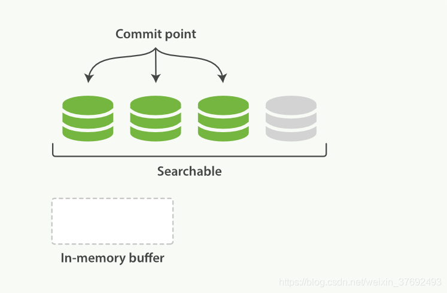

Elasticsearch 是一个分布式、RESTful 风格的搜索和数据分析引擎
1 基础
9300 端口为 Elasticsearch 集群间组件的通信端口， 9200 端口为浏览器访问的 http协议 RESTful端口。
ElasticSearch8.x版本默认开启密码验证功能，可在 elasticsearch.yml末尾添加 xpack.security.enabled: false取消密码验证
1.1 倒排索引
正排索引（传统）
| id | content |
|---|---|
| 1001 | my name is zhang san |
| 1002 | my name is li si |
倒排索引
| keyword | id |
|---|---|
| name | 1001, 1002 |
| zhang | 1001 |
1.2 数据库结构
Elasticsearch 是面向文档型数据库，一条数据在这里就是一个文档。 Elasticsearch 里存储文档数据和关系型数据库 MySQL 存储数据的概念进行一个类比

ES 里的 Index 可以看做一个库，而 Types 相当于表， Documents 则相当于表的行，Fields相当于表中的字段。这里 Types 的概念已经被逐渐弱化， Elasticsearch 6.X 中，一个 index 下已经只能包含一个type， Elasticsearch 7.X 中, Type 的概念已经被删除了。
1.3 索引操作
ES 支持的索引方法只有 4 中：[DELETE, HEAD, PUT, GET]
- 创建索引
- 对比关系型数据库，创建索引就等同于创建数据库。
PUT --> http://127.0.0.1:9200/shopping- put 具有幂等性，重复创建会报错
- 查看索引
- 查看指定索引：
GET ---> http://127.0.0.1:9200/shopping - 查看全部索引：
GET ---> http://127.0.0.1:9200/_cat/indices?v。请求路径中的_cat 表示查看的意思， indices 表示索引，所以整体含义就是查看当前 ES服务器中的所有索引，就好像 MySQL 中的 show tables
- 查看指定索引：
- 删除索引：
DELETE ---> http://127.0.0.1:9200/shopping
1.4 文档操作
与 MYSQL 不同，ElasticSearch 中没有表的概念，文档数据是直接添加在索引中的。
添加文档：
POST ---> http://127.0.0.1:9200/shopping/_doc，同时必须在请求体中添加JSON格式的数据。这种方式会为添加的数据随机生成一个id，而且不论数据是否相同，每次请求都会新添加一份数据且生成的id都不同，因此不具有幂等性，即只能用于POST方法。- 在添加时可以自定义id来规定数据的id：
POST ---> http://127.0.0.1:9200/shopping/_doc/1001，这样就将这份数据的id绑定为1001，多次添加id也不会变且不论请求几次只新增一份数据，具有幂等性，故POST和PUT都可以
- 在添加时可以自定义id来规定数据的id：
查询文档
- 查询指定数据：
GET ---> http://127.0.0.1:9200/shopping/_doc/1001，可根据返回JSON串中的found字段判断是否找到 - 查询全部数据：
GET ---> http://127.0.0.1:9200/shopping/_search
- 查询指定数据：
修改文档
全部修改：
PUT ---> http://127.0.0.1:9200/shopping/_doc/1001，请求体中放入新数据，可以看到和上方带自定义id 的新增数据方式完全一样，即这种方式既可以新增也可以修改部分修改：
POST ---> http://127.0.0.1:9200/shopping/_update/1001，请求体数据如下1
2
3
4
5{ // doc 是固定写法
"doc": {
"title": "华为手机" // title 是要修改的字段
}
}
删除文档：
DELETE ---> http://127.0.0.1:9200/shopping/_doc/1001，是逻辑删除
1.5 查询
注：HTML 约定 HTTP 协议的 GET 请求不携带请求体，但是 HTTP 协议本身不限制 GET 请求携带请求体
1.5.1 条件查询
可以在url中写入查询条件，但不建议，推荐将条件附在请求体中
GET ---> http://127.0.0.1:9200/shopping/_search
1 | { |
1.5.2 多条件查询
GET ---> http://127.0.0.1:9200/shopping/_search
1 | { |
1.5.3 模糊查询
ElasticSearch 作为一个全文检索引擎，其所有查询都是模糊查询。
1 | { |
1.5.4 复杂查询
GET ---> http://127.0.0.1:9200/shopping/_search
1 | { |
1.5.5 聚合查询
聚合查询即相当于 MySQL 中 select 之后的聚合函数，而不是 having 之后的聚合函数，因为这里是对全文的数据进行聚合查询
GET ---> http://127.0.0.1:9200/shopping/_search
1 | { |
1.6 映射
索引库，相当于数据库中的 database。创建数据库表需要设置字段名称，类型，长度，约束等；索引库也一样，需要知道这个类型下有哪些字段，每个字段有哪些约束信息，这就叫做映射。映射类似于数据库中的表结构。（旧版本一个库中的多个Type可以有不同的映射，新版本删除了Type，所以映射直接作用于库）
PUT http://127.0.0.1:9200/user先建索引，不能直接建映射
PUT http://127.0.0.1:9200/user/_mapping
1 | { |
之后就可以添加数据，当然数据只能包含映射中定义的字段；之后的查询也会根据映射中的约束确定是否分词、索引。
2 集群
2.1 核心概念
索引：一个索引就是一个拥有几分相似特征的文档的集合。在一个集群中，可以定义任意多的索引。能搜索的数据必须索引，这样的好处是可以提高查询速度。Elasticsearch 索引的精髓：一切设计都是为了提高搜索的性能。
类型：废弃不用
文档：文档是可被索引的基础信息单元，也就是一条数据。在一个 index 里面，可以存储任意多的文档。
字段：相当于是数据表的字段，对文档数据根据不同属性进行的分类标识。
映射：映射是对字段的约束，可以指定字段的类型、默认值、是否可以索引、索引方式等。
分片：一个索引可以存储超出单个节点硬件限制的大量数据，单节点存储不下或者处理搜索请求太慢。Elasticsearch 支持将索引划分成多份，每一份就称之为分片。当你创建一个索引的时候，你可以指定你想要的分片的数量。每个分片本身也是一个功能完善并且独立的“索引”，这个“索引”可以被放置到集群中的任何节点上。分片有以下两点优势：
- 允许水平分割 / 扩展你的内容容量。
- 允许在分片之上进行分布式的、并行的操作，进而提高性能/吞吐量。
Elasticsearch 自动管理分片的分布、搜索请求的聚合等。
副本：Elasticsearch 允许创建分片的一份或多份拷贝用于高可用，因此复制分片和主分片不应该在同一节点上，同时搜索可以在所有的副本上并行运行，提高搜索效率。
分配：将分片分配给某个节点的过程，包括分配主分片或者副本。如果是副本，还包含从主分片复制数据的过程。这个过程是由 master 节点完成的。
2.2 节点类别
- 主节点：每个节点启动后，默认就是一个Master eligible节点，可以通过设置
node.master:false来改变，Master-eligible节点可以参加选主流程，成为Master节点，每个节点都保存了集群的状态，但只有Master节点才能修改集群的状态信息，主节点主要负责跟踪集群中的节点，决定分片分配到哪一个节点，在集群再平衡的过程中，如何在节点间移动数据等。 - 数据节点：负责保存分片数据。每个节点启动后默认就是一个Data Node节点，可设置
node.data:false改变。 - 协调节点：负责接收Client的请求，将请求分发到合适的节点，最终把结果汇集到一起，每个节点默认都起到了协调节点的职责。
注：每个节点都保存了集群的状态，这些状态中就包括所有的主分片、副本分片具体在哪个节点上。
2.3 分片分配
PUT http://127.0.0.1:1001/users ，创建索引时指定分片与副本，一旦确定分片数量就不能再改变了，但是副本数量还可以改变。
1 | { |
如上设置，一个索引有 6 份数据。
当集群中只有一个节点时，所有的主分片都在一个节点上，但是副本不能和主分片在一个节点，故三个副本分片都是未分配的。此时集群是正常运行的，但存在丢失数据的风险。
当集群有多个节点时，各分片会被均匀地分布在不同的节点上，副本和主分片一定不在一个节点。
主节点挂掉后会从其余节点重新选取主节点，主分片所在节点挂掉后会从副本重新选取主分片。
当集群扩容或缩容时，节点中的分片会被重新分配，以使得分布更均匀。
分片是一个功能完整的搜索引擎，它拥有使用一个节点上的所有资源的能力。
2.4 路由计算
添加文档时，文档会被放到一个主分片中，具体应该放在哪个主分片是由下公式决定的。
1 | index = hash(id) % 主分片数量 |
id 默认为文档 id，也可以自定义，公式结果就是文档所在分片的位置。这也是为什么创建索引的时候就确定好主分片的数量并且永远不会改变这个数量:因为如果数量变化了，那么所有之前路由的值都会无效，文档也再也找不到了。
我们可以将增删改查的请求发送到集群中的任一节点。每个节点都会根据上述公式计算出文档所在的主分片，然后根据节点存储的集群状态找到主分片所在的节点，将请求转发到对应的节点上。
2.5 写操作
写操作必须在主分片上面完成之后才能被复制到相关的副本分片。写操作流程如下：
- 协调节点接收到客户端请求后根据计算结果将请求转发给主分片所在节点
- 主分片保存数据，并把数据发送给副本分片
- 副本分片将数据保存并把保存结果反馈给主分片
- 主分片收到副本的反馈并向客户端反馈保存完成
在客户端收到成功响应时，文档变更已经在主分片和所有副本分片执行完成，变更是安全的。下方俩参数可以影响写入流程，但很少使用
- consistency：一致性，可以设置下方 3 个值
- one ：只要主分片状态 ok 就允许执行写操作。
- all：必须要主分片和所有副本分片的状态没问题才允许执行写操作。
- quorum：默认值为quorum , 即大多数的分片副本状态没问题就允许执行写操作。
- timeout：如果没有足够的副本分片会等待分片的添加，默认等一分钟
Replica写入失败，Primary会执行一些重试逻辑，尽可能保障Replica中写入成功。如果一个Replica最终写入失败，Primary会将Replica节点报告给Master，然后Master将Replica移除。在集群状态更新到各个节点之前，用户可能还会读到这个Replica的数据（因为用户请求到达的协调节点可能还持有旧的集群状态，即被移除的Replica还处于可用状态），但是更新了Meta之后就不会了。所以这个方案并不是非常的严格，考虑到ES本身就是一个近实时系统，数据写入后需要refresh才可见，所以一般情况下，在短期内读到旧数据应该也是可接受的。
2.6 读操作
在处理读取请求时，协调结点在每次请求的时候都会通过轮询所有的副本分片来达到负载均衡。在文档被检索时，文档可能已经存在于主分片上但是还没有复制到副本分片，此时副本分片可能会报告文档不存在，但是主分片可能成功返回文档。 一旦索引请求成功返回给用户，文档在主分片和副本分片都是可用的。读操作流程如下：
- 协调节点接收到客户端请求后计算数据所在的主分片和所有副本位置
- 通过轮询所有节点达到负载均衡，将请求转发到具体节点
- 将节点返回的查询结果返回给客户端
2.7 更新操作
在 Elasticsearch 中文档是不可改变的，不能修改它们。 故更新操作就是替换旧文档并重建索引。Elasticsearch 会将旧文档逻辑删除，之后清理这些逻辑删除文档。
- 协调节点接收到客户端请求后根据计算结果将请求转发给主分片所在节点
- 主分片以乐观锁的方式循环更新文档，直到更新成功（ES没有悲观锁）
- 主分片将更新后的文档同步给副本节点，并重新建立索引。
- 一旦所有副本分片都返回成功，主分片向协调节点也返回成功，协调节点向客户端返回成功。
主分片向副本同步更新操作时，它会转发完整文档的新版本。这些复制请求是并行发送的，并且可能不按顺序到达其目的地。为确保文档的较旧版本不会覆盖较新的版本，对文档执行的每项操作均由主分片分配一个序号，以协调更改。每次操作都会增加序列号，因此可以确保较新的操作具有比较旧的操作更高的序列号。然后，Elasticsearch 可以使用操作的序列号来确保分配给它的序列号较小的更改不会覆盖较新的文档版本。
3 索引
正向索引和倒排索引都会将文档拆分为一个个单词（关键字），正向索引是从文档id到关键字的映射，而倒排索引是从关键字到文档id 的映射。
在正向索引中，当搜索一个关键字时，需要将所有文档检索一遍来统计关键字出现的频次，从而根据频次对搜索结果进行排序。但是互联网上收录在搜索引擎中的文档的数目是个天文数字，这样的索引结构根本无法满足实时返回排名结果的要求。
在倒排索引中，关键词作为键，搜索时只需要统计哪个文档命中了更多的键就可得到排序结果。其实在搜索时使用的是模糊查询，即搜索 dogs 时 dog 也会命中，且大小写、近义词等都会命中
3.1 索引建立
对于一个给定的磁盘中的文档集合，索引的建立过程如下
- 从磁盘读取文档，对文档内容进行解析，并在内存中建立一个倒排索引，相当于对目前处理的文档子集单独在内存中建立起了一整套倒排索引，和最终索引相比，其结构和形式是相同的，区别只是这个索引只是部分文档的索引而非全部文档的索引。
- 当内存占满后，为了腾出内存空间，将整个内存中建立的倒排索引写入磁盘临时文件中，然后彻底清除所占内存，这样就空出内存来进行后续文档的处理。
- 每一轮处理都会在磁盘产生一个对应的临时文件，当所有文档处理完成后，在磁盘中会有多个临时文件，将这些临时文件合并形成最终索引。
3.2 倒排索引不可变
早期的全文检索会为索引（Lucene索引，即分片）内的所有文档建立一个很大的倒排索引并将其写入到磁盘。 文档更新时需要重建整个索引，一旦新的索引就绪，旧的就会被其替换，这样最近的变化便可以被检索到。
倒排索引被写入磁盘后是不可改变的：它永远不会修改。因此，它有如下优点
- 不需要锁。如果你从来不更新索引，你就不需要担心多进程同时修改数据的问题。
- 一旦索引被读入内核的文件系统缓存，便会留在哪里，由于其不变性。只要文件系统缓存中还有足够的空间，那么大部分读请求会直接请求内存，而不会命中磁盘。这提供了很大的性能提升。
- 写入单个大的倒排索引允许数据被压缩，减少磁盘IO和需要被缓存到内存的索引的使用量。
其最大的缺点就是每次更新和新增都需要重建整个索引。
3.3 动态更新索引
倒排索引一旦被写入磁盘就是不可更改的，要在保留不变性的前提下实现倒排索引的更新需要增加临时索引。
Elasticsearch 基于 Lucene, 这个java库引入了按段搜索的概念。 每一段本身都是一个倒排索引， 但索引在 Lucene 中除表示所有段的集合外， 还增加了提交点的概念，提交点是一个列出了所有已知段的文件。
在早期全文检索中为整个文档集合建立了一个很大的倒排索引，并将其写入磁盘中，如果需要让一个新的文档可被搜索，需要重建整个索引。为解决重建整个索引的性能低下，引入了段的概念，将磁盘中的完整索引文件拆分为多个文件，每个子文件叫做段，每个段都是一个被写入磁盘的倒排索引，因此段具有不变性。
当写入一个新文档时，首先被写入到内存缓存中，默认每1秒将缓存中的文档生成一个新的段（索引）并清空原有缓存。这个新的段首先被写入系统缓存，保证段文件可以正常被正常打开和读取，后续再进行刷盘操作。由此可以看到，ES并不是写入文档后马上就可以搜索到，而是一个近实时的搜索（默认1s后）。
文档写入内存缓存区中，默认每1s生成一个新的段，这个写入并打开一个新段的轻量的过程叫做 refresh。Refresh 的作用是将内存中新写入的document生成一个segment，基于系统文件形式缓存在内存中，这样Lucene就能够检索（Lucene基于系统文件缓存的形式来读取加载数据），由此可知索引不会出现在用户内存。如下图所示，右方灰色的段会在搜索请求中被搜索到，但是还未提交。

文档的增删改查对索引的影响如下：
- 新增文档：立即将其加入临时索引中
- 删除文档：段不可以修改，因此删除文档会将文档内容删除，但是依据该文档建立的段（索引）不会被删除，而是将该文档ID存入删除文档列表中。被删除的文档在查询时依然会被查询到，只是最后会将结果在删除文档列表中过滤。
- 更新文档：将旧文档放入删除文档列表，解析更改后的文档内容，并将其加入临时索引中
- 查询关键字：对所有可搜索的段按顺序查询，词项统计会对所有段的结果进行聚合，之后利用删除文档列表进行过滤，将搜索结果中那些已经被删除的文档从结果中过滤，形成最终的搜索结果，并返回给用户
3.4 持久化
即使通过每秒refresh实现了近实时搜索，但refresh无法保障数据安全，为避免数据在被完全提交之前断电丢失，Elasticsearch 引入了事务日志（translog），每一次对 ES的变更操作都会写入到translog中，translog默认每 5 秒刷一次盘，保证变更的持久性。遭遇意外断电或者ES程序重启时，ES首先通过磁盘中最后一次提交点恢复已经落盘的段，然后将该提交点之后的变更操作通过translog进行重放，重构内存中的segment。
持久化流程如下：
- 新的文档进入内存缓冲区，并追加到 translog
- 每秒进行一次 refresh，refresh会清空缓冲区，但是不会清空translog
- refresh操作不断发生，更多的文档被追加到translog
- 默认每 5 秒，translog 刷盘一次。这步只是将translog 保存在磁盘，但是新的段还在内存
- 默认每 30 秒，或当translog太大时，进行flush操作，包括以下动作
- 执行一次 refresh
- 将系统缓冲区的段落盘
- 包含所有段信息的新的提交点落盘
- 删除当前 translog，并新建一个 translog。（translog 仅记录还没有落盘的操作）
3.5 段合并
由于 refresh 操作每秒会创建一个新的段，这样会导致短时间内的段数量暴增。每个搜索请求都必须轮流检查每个段；所以段越多，搜索也就越慢。Elasticsearch通过在后台进行段合并来解决这个问题。小的段被合并到大的段，然后这些大的段再被合并到更大的段。段合并的时候会将已删除文档从文件系统中清除，被删除的文档不会被拷贝到新的大段中。段合并属于一个后台操作。
- refresh操作会相应的产生很多小的segment文件，并刷入到文件系统缓存。此时文件系统中既有已经完全commit的segment也有不完全提交仅searchable的segment。注：读取索引必须先将索引从磁盘读到内存，此处的文件系统缓存是读写共用的缓存。
- es可以对这些零散的小segment文件进行合并，下图展示两个已提交和一个未提交的小段合并为一个大段

- 段合并完成之后会删除被合并的小段，并执行一次 flush 操作，将大段和合并后的提交点刷盘
注：refresh 和段合并的操作是在内存中完成的
每一次refresh，如果生成了新的segment，则都会触发 Segment Merge。触发 Merge 操作不表示一定会 merge segment，是否要merge是由 Merge Policy 来决定的。 Merge Policy 有ForceMergePolicy(ES强制merge)，TieredMergePolicy(阶梯式的，Lucene默认策略)等等。
3.6 并发控制
Elasticsearch 是多线程的，当多个写请求同时到达时可能产生并发问题。如多个客户端同时请求更新同一文档，会使得更新会覆盖丢失。
在更新操作中通过if_seq _no和if _primary_term进行乐观锁并发控制，Elasticsearch 会比较文档当前的这两个参数与请求时携带的是否一致，只有一致才会更新成功。
POST http://127.0.0.1:9200/shopping/_update/1001?if_seq_no=11&if_primary_term=15
外部系统版本控制
当使用mysql作为主库，Elasticsearch做数据检索，这意味着主数据库的所有更改发生时都需要被复制到Elasticsearch，如果多个进程负责这一数据同步，可能产生并发问题。
如果主数据库已经有了版本号，可以在 Elasticsearch 中通过增加 version_type=external的方式重用该版本号。外部版本号的处理方式和我们之前讨论的内部版本号的处理方式有些不同，Elasticsearch不是检查当前 _version和请求中指定的版本号是否相同，而是检查当前_version是否小于指定的版本号。如果请求成功，外部的版本号作为文档的新_version进行存储。
4 优化
4.1 合理设置分片数
分片和副本的设计为 ES 提供了支持分布式和故障转移的特性，但不合理的分配分片和副本会带来负面影响
- 一个分片的底层即为一个 Lucene 索引，会消耗一定文件句柄、内存、以及 CPU运转，即每个分片都会消耗资源，且如果多个分片在同一个节点，还会竞争资源。
- 用于计算相关度的词项统计是基于分片的。如果有许多分片，每个都只有很少的数据会导致很低的相关度。
考虑分配分片和副本应遵循如下原则：
- 每个分片占用的硬盘容量不超过 ES 的最大 JVM 的堆空间设置（32G）
- 分片数不超过节点数的 3 倍
节点数<=主分片数 *（副本数+1）
4.2 推迟分片分配
节点闪断后，集群会等待一分钟来查看节点是否会重新加入，如果这个节点在此期间重新加入，重新加入的节点会保持其现有的分片数据，不会触发新的分片分配。这样就可以减少 ES 在自动再平衡可用分片时所带来的极大开销。可以将这个时间再配置的大一些，尽可能地减少ES 的自动再平衡。
4.3 路由选择
查询时 Elasticsearch 通过shard = hash(routing) % number_of_primary_shards计算文档在哪个分片上。如果在查询时不带 routing ，协调节点会将查询请求分发到每个分片上，然后将所有节点的结果聚合排序再返回，性能低下，所以在查询时应该带上 routing ，可以提升性能。
4.4 减少 Refresh 次数
对于搜索性能要求不高，写入要求较高的场景，可通过减少 Refresh 次数优化写索引的性能，减少 Refresh 的次数可以一次性生成比较大的segment，这意味着可以减少向系统缓存写入的次数，同时减少合并的次数和减少文件句柄使用。
5 面试题
5.1 为什么要使用 Elasticsearch
数据量大时，使用模糊查询，Mysql会全表扫描，效率低，因此将经常搜索的字段放入Elasticsearch中，提高查询效率。
5.2 为什么Elasticsearch 查询效率高
如 5.1 模糊查询时Mysql效率低，而Elasticsearch 使用倒排索引，查询时直接命中分词就可以找到所有包含这些分词的文档。当数据量大的时候，Elasticsearch 的索引（每个索引项为从分词到文档ID 的映射）也会很大，所以会存入磁盘，故需要在内存中使用字典树存储所有的分词，当我们模糊查询时，可能会在字典树中命中一个或多个分词，得到这些分词（这些分词是有序的，如果需要可以通过二分查询找到具体分词）然后通过索引就可以快速查找到所需文档。
5.3 Elasticsearch 索引文档的流程
索引文档即对文档建立索引的流程，回答上方的 动态更新索引、持久化、段合并即可，（并发控制可答可不答）
5.4 Elasticsearch 更新和删除文档的流程
Elasticsearch 中的文档是不可变的，每个段都有一个相应的.del 文件，删除只是在.del文件中被标记为删除，文档依然能匹配查询，但是会在结果中被过滤掉。当段合并时，在.del 文件中被标记为删除的文档将不会被写入新段，同时真物理删除文档。更新操作是先删除再添加新版本文档，新版本文档被索引到新段。
5.5 Elasticsearch 搜索的流程
搜索分为两个阶段， Query 阶段和 Fetch阶段；
在初始查询阶段时，查询会广播到索引中每一个分片拷贝（主分片或者副本分片）。 每个分片在本地执行搜索并构建一个匹配文档的大小为 from + size 的优先队列。 PS：在搜索的时候是会查询Filesystem Cache 的，但是有部分数据还在 Memory Buffer，所以搜索是近实时的。
每个分片返回各自优先队列中所有文档的 ID 和排序值给协调节点，它合并这些值到自己的优先队列中来产生一个全局排序后的结果列表。排序是根据计算文档的相关性得分进行的。
接下来就是取回阶段， 协调节点辨别出哪些文档需要被取回并向相关的分片提交多个 GET 请求。每个分片加载并丰富文档，如果有需要的话，接着返回文档给协调节点。一旦所有的文档都被取回了，协调节点返回结果给客户端。
Query Then Fetch 的搜索类型在文档相关性打分的时候参考的是本分片的数据，这样在文档数量较少的时候可能不够准确， DFS Query Then Fetch 增加了一个预查询的处理，询问 Term 和 Document frequency，这个评分更准确，但是性能会变差。
5.6 Elasticsearch 一致性
Elasticsearch 的读写一致性主要有两个方面：
- refresh 导致的非实时读
- 使用分片和复制带来的副本一致性问题
设置为一有更改就refresh到filesystem cache即可解决第一个问题。
若 consistency 设置为 all 并且 replication 是默认的同步模式时，读到的一定是最新的数据；当 consistency 不是 all 或者 replication 是异步时需要从 primary shard 读取。
这里只是读写的一致性，对一致性问题应该回答集群中的选主和同步。